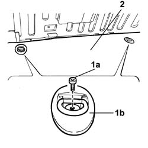
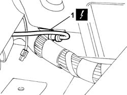
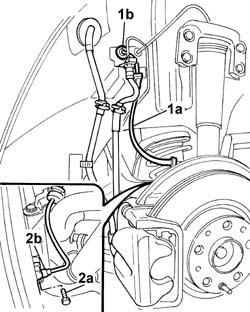

3340A34 rpm sensor (one) for one l/h or r/h rear wheel - r+r
- Path
- Procedures > 33 BRAKES > 3340 ANTI-LOCK BRAKING SYSTEM (A.B.S.) > 3340A ABS check/adjustment devices > 3340A34 rpm sensor (one) for one l/h or r/h rear wheel - r+r
- Kind
- repair procedure (removal / refitting; the operation number is the code)
- Applies to
- all engines; all production periods
- Interactive page
- https://sloeber94.github.io/elrnDB-lThss/en/#/78650
Applies to: all engines; all production periods
 Removing
Removing
 Refitting
Refitting- Position the vehicle on a lift.
- Disconnect the negative battery terminal.
- Open the boot.
1. Undo the fixing bolts (1a) and remove the two belt hooks (1b).
2. Fold over the rear part of the spare wheel housing floor covering.

Applies to: all engines; all production periods
1. Disconnect the electrical connection for the rear wheel rpm sensor.
 | Description | Connector |
|---|---|---|
1 | Left rear wheel sensor for ABS | K075 |
- Release the wiring from the retaining springs.

Applies to: all engines; all production periods
- Raise the vehicle.
See in Op. 4450B11 Rear WHEEL (one) - R.R.
See in Op. 7055B45 Right rear wheel arch liner - R.R.
1. Release the wiring (1a) from the retaining springs and pass it through the opening in the bodyshell (1b).
2. Undo the fixing bolts (2a) and remove the rear wheel left rpm sensor (2b).

Applies to: all engines; all production periods
Refitting
Removing- Fit the rear wheel left rpm sensor.
- Tighten the rear sensor fixing bolt.
- Position the wiring and secure it using the bands, also place it inside the luggage compartment via the opening in the bodyshell.
See in Op. 7055B45 Right rear wheel arch liner - R.R.
See in Op. 4450B11 Rear WHEEL (one) - R.R.
- Working via the luggage compartment, connect the electrical connection for the rear wheel sensor.
| Description | Connector |
|---|---|---|
. | Left rear wheel sensor for ABS | K075 |
- Reposition the luggage compartment floor covering.
- Fit the belt hooks tightening the fixing bolts.
- Connect the negative battery terminal.
- Remove the vehicle from the lift.